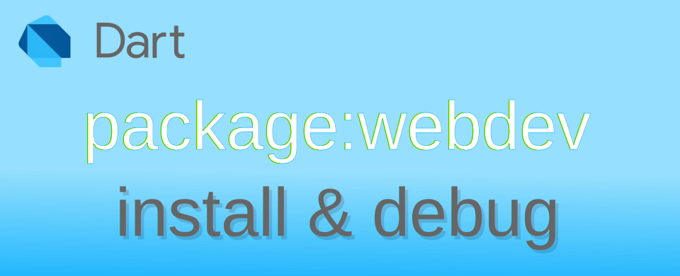

Dart: บันทึกการเปิดใช้งาน webdev บน Windows

บันทึกปัญหาและการใช้งาน webdev เพื่อเขียน dart สำหรับติดต่อกับ web browser ใน Visual Studio Code บน Windows
สร้าง dart web project
เปิด Visual Studio Code จากนั้นเรียกใช้คำสั่ง
- >Dart: New project
- เลือก Bare-bones Web App
- ตั้งชื่อ Project ที่ต้องการ
การสร้าง Project สำหรับ dart เพื่อใช้งาน web application
ลองสั่ง Run
เมื่อลองคลิก Run ตัว void main() ตัว Visual Studio Code จะแจ้งว่าต้องเปิดใช้งาน webdev ก่อน กดปุ่ม Activate webdev เมื่อดูผลการใน DEBUG CONSOLE ทำงานพบว่ามีปัญหา ลองพยายามหาทางแก้ไขแล้ว แต่หาไม่เจอ😢 แต่ถ้าใครใช้งานแล้วไม่พบปัญหาก็ใช้งานแบบนี้ดีกว่า เพราะสามารถใช้งาน debug ได้สะดวก ไม่ต้องมาตั้งค่าด้วยมือเอง
พบปัญหาเมื่อคลิกคำสั่ง Run โดยตรง
ตั้งค่า webdev ด้วยมือ
ตั้งค่า path เพื่อชี้ไปยัง Cache\bin
เพื่อให้สามารถเรียกใช้ command line ได้โดยไม่เกิดปัญหาเรื่องหาไฟล์ package ไม่เจอ จำเป็นต้องเพิ่ม Path ชื่อ %LOCALAPPDATA%\Pub\Cache\bin เข้าไปในระบบของ Windows ผ่าน System Properties โดยทำแค่ครั้งเดียว เพื่อให้สามารถเรียกใช้งาน webdev serve ได้ถูกต้อง
การเพิ่ม Path เข้าไปในระบบ Windows
ทำการ Activate
คู่มือการ Activate ให้เรียกคำสั่ง dart pub global activate webdev เพื่อเปิดใช้งาน webdev โดยคำสั่งนี้จะไปทำการโหลด package ที่เกี่ยวข้องมาใช้งาน
การ activate webdev
หากไม่ต้องการใช้งาน webdev แล้ว สามารถสั่งยกเลิกการ Activate ด้วยคำสั่ง dart pub global deactivate webdev
เปิด service เพื่อ run โปรแกรม
ให้เรียกคำสั่ง webdev serve ในโฟลเดอร์ของ Project ที่ต้องการ เพื่อเปิด local web development server โดยตัว webdev จะทำหน้าที่ช่วย compile ไฟล์ dart ที่ใช้งานทั้งหมดให้เป็นไฟล์ JavaScript และ deploy ให้อัตโนมัติ กระบวนการนี้จะเกิดขึ้นเมื่อผู้ใช้งานแก้ไขไฟล์ dart และสั่ง Save
ในตัวอย่าง Project บรรจุในโฟลเดอร์ C:\src\dart\dart_web_application_1 ก็ให้เรียกคำสั่ง webdev serve ที่โฟลเดอร์นี้ หากเปิดใช้งานได้สำเร็จ จะแจ้งผู้ใช้งานให้ทราบว่าจะเรียกใช้งานจาก URL อะไร โดยค่าปริยายจะเป็น http://127.0.0.1:8080 หากต้องการเปลี่ยนหมายเลข port หรือค่าอื่น ๆ สามารถดูได้จากคู่มือวิธีใช้งาน
การเปิด webdev serve
ส่วนวิธีการหยุด service สามารถทำได้โดยการกด Ctrl + C แล้วใส่กด y เพื่อยืนยันการหยุดทำงาน
เปิด service เพื่อ debug โปรแกรม ผ่าน DevTools
ในกรณีที่ต้องการ debug โดยการใช้งาน DevTools สามารถเพิ่ม options ดังนี้ webdev serve --debug หากเปิดใช้งานสำเร็จ จะพบว่ามี Serving DevTools เพิ่มขึ้นมา ให้ผู้ใช้เปิด URL ดังกล่าว แต่จากการทดสอบพบว่า ไม่สามารถทำตาม Debugging Dart web apps ได้ 😢 ไม่ว่าจะเรียกผ่าน URL แล้ว connect ก็ขึ้นว่าไม่พบ หรือเรียกจาก Chrome Extension ก็ขึ้นพยายามเชื่อมต่อแล้วก็เงียบไป โดยที่โปรแกรมก็ที่เขียนให้แสดงเวลาปัจจุบันทุก 1 วินาทีก็ยังทำงานอยู่
สรุปว่า เวลาจะ debug ก็ใช้ผ่าน Developer tools หรือกด Ctrl + Shift + I ก็พอใช้งานได้
การเปิด webdev serve แบบ debug
เมื่อพยายามเปิดตัว DevTools จะขึ้น error
สำหรับวิธีใช้งาน DevTools สามารถดูได้จากวีดีโอด้านล่าง
การ build เพื่อนำไฟล์ไปใช้งานจริง
เมื่อทดสอบจนได้ผลที่พอใจแล้ว ขั้นตอนต่อไปคือเอาไฟล์ที่จะใช้งานจริงไปใช้งาน ผู้ใช้งานต้องทำการ build เพื่อทำการ compile ไฟล์ dart ที่เกี่ยวข้องทั้งหมดเป็นไฟล์ JavaScript ด้วยคำสั่ง webdev build โดยหากไม่กำหนด options ใด ๆ เลย ไฟล์ที่ถูก compile จะไปอยู่ในโฟลเดอร์ build ของ Project ที่ทำงานอยู่
การ build เพื่อ compile ไฟล์ dart ทั้งหมด
ความเห็นส่วนตัวกับ webdev
โดยทั่วไปใช้ dart ในส่วนของการเขียน command-line console application กับใช้ใน Flutter ในส่วนที่ใช้กับ web อย่างเดียวไม่ได้สนใจเท่าไหร่ แต่ที่ต้องมาศึกษาเนื่องจากหากเขียน Flutter ที่ทำงานบน web จำเป็นต้องคุยกับ JavaScript ที่อยู่บนเบราเซอร์ด้วย เพื่อให้สามารถทำงานได้มีประสิทธิภาพและสามารถรองรับการอ่านค่าจากเบราเซอร์เช่น URL cookies Client-side storage หรือจะใช้งานฟังก์ชั่นที่ได้จาก wasm ในการประมวลผลข้อมูลภาพ เสียง ฯลฯ
จากที่ลองเขียนก็ถือว่ามีข้อดีในส่วนของการจัดการ data-type และ null safety ที่ JavaScript ไม่มี โดย dart code ที่แปลงแล้วประสิทธิภาพไม่ได้แย่ลง แต่ส่วน development tools ดูเป็นลูกเมียน้อยพอสมควร คือหาข้อมูลจากที่อื่นได้น้อยมาก ๆ ส่วนใหญ่คือใช้กับ Flutter เสียมากกว่า ที่เอามาใช้เดี่ยว ๆ น้อยกว่า 🙄